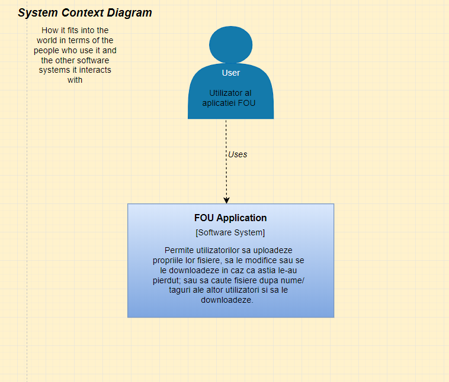
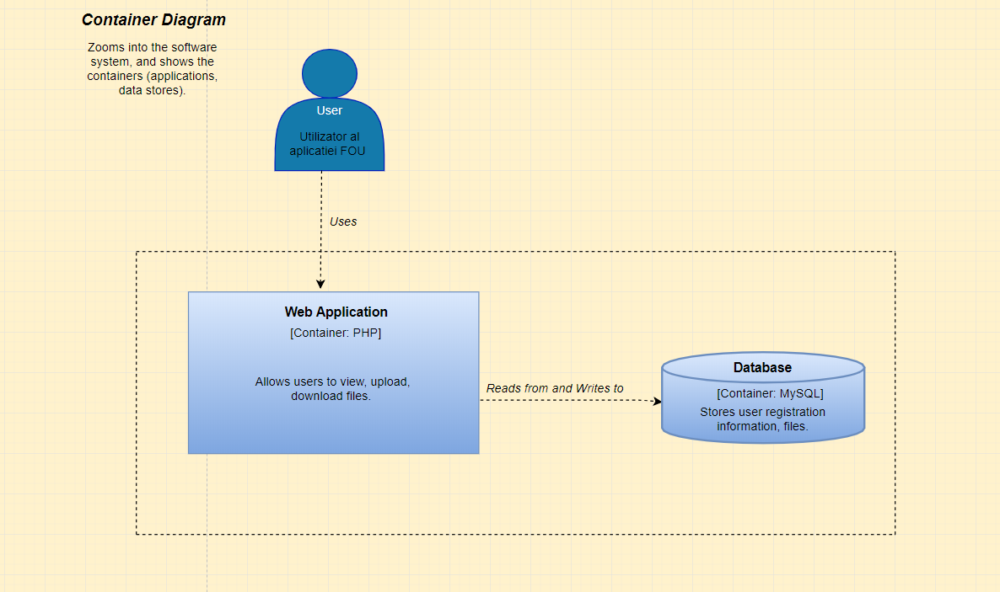

FOU (File Online Upload)
Project Authors
Project description
This project aims to be a web application which allows users to transfer files from their local computer using an account. If the files exists already in the web application, it would save the older versions, so the user could access them anytime. The system allows adding suplimentary meta-data for every uploaded document such as description, tags. Also, the user has the chance to group the uploaded files by author or by program. It also has functions for deleting (if the file is yours), searching or downloading files.
Architecture
1. System Context Diagram
The System Context Diagram shows how the web application fits into the world in terms of the people who use it, which in our case are the people who have an account and that want to upload or download files, and the other software systems it interacts with.
2. Container Diagram
The Container Diagram zooms into the software system, and it shows the containers, which are the web application (which allows users to make an account, view, upload and download files) and the storage of data.
2.1 Storage of data
We used a MySQL Database in order to manage the users of the application and the files uploaded by them.
Our database has four tables:
Application Flow
Starting with the main page, a person would see two buttons: the register button and the login one. Creating an account, the user
will be redirected to the login page, where he would insert his personal data. The loaded page has three main buttons: My Files (which
shows the user all of the private files the user has uploaded on the website), All Files (which shows the user all of the public files
from the website), Add File (which allows the user to upload a new file on the web application).
Also, there is a searching bar which can be used to search informations about some file.
AJAX
Register and Login check the inputs (for register: email, username, password, confirm password; for login: username, password) for
errors from the server. It is an asynchronous operation, so the page will be loaded and the response from the server will be loaded when
it gets to our application.
If the server says that an error occurs from one of the inputs, the error is received through ajax so we can print it on the HTML page.
This checks each input. So for example, in register if the first input is wrong (email), it will print a message with the text "Invalid
email address", if the next time we write in the input, the email is okay, it will move and check it for errors for the next input ("username").

Tehnologies used
For Frontend we used:
- HTML5: to show the browser how to print the web pages
- CSS3: to style the pages
- Javascript: to use it with ajax for the error messages
For Backend we used:
- PHP: it is interpreted by the web server and it generates HTML code which will be seen by the user
Server APACHE(from XAMPP)
For storage data: MySQL server
Bibliography
https://www.php.net/docs.php
https://www.w3schools.com/
https://profs.info.uaic.ro/~busaco/teach/courses/web/